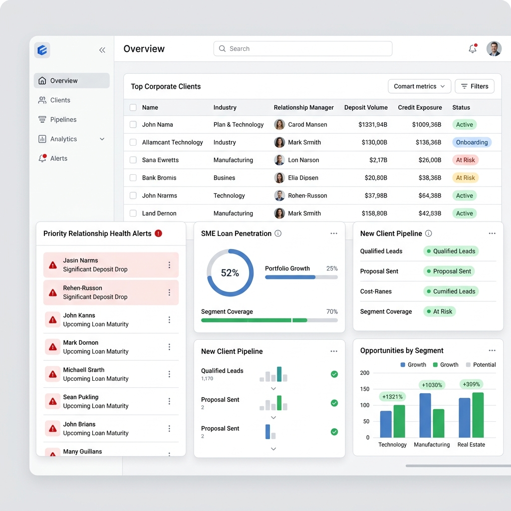

Background
In corporate banking, Relationship Managers (RMs) handle large portfolios of corporate clients. The branch faced a critical "Liquidity Unbalance": they had extremely high funding (Giro balances) but very low lending (SME Loans).
Despite the obvious potential, RMs were struggling to identify which clients to cross-sell to because the data was scattered. Furthermore, long-time loyal clients were being ignored for months, increasing the risk of churn to competitor banks.
Challenges: The "Blind Spots" of RM
Liquidity Imbalance
A massive gap between high Giro deposits and low SME loan penetration, leaving huge potential revenue on the table.
Relationship Risk
Loyal clients (>10 years tenure) were frequently ignored for over 90 days, increasing churn risk without the RM knowing.
Manual Pitching
RMs spent hours drafting manual engagement and cross-selling scripts, leading to inconsistent messaging and delays.
The Solution: Smart-RM Co-Pilot
I designed and developed the **Smart-RM Co-Pilot**, an intelligent dashboard that turns scattered client data into actionable insights and ready-to-send AI communications.

Hard Evidence: Before vs After
Technologies Used
Long-Term Business Impact
Objective Targeting
RMs no longer guess who to call. The system directly targets accounts with high Giro balances and no active loans.
Zero Churn from Neglect
With color-coded SLA alerts on "Days Since Contact", no loyal client is ever left unengaged for more than 90 days.
Hyper-Personalization
The AI automatically drafts WhatsApp scripts based on the client's tenure, financial gap, and historical context.